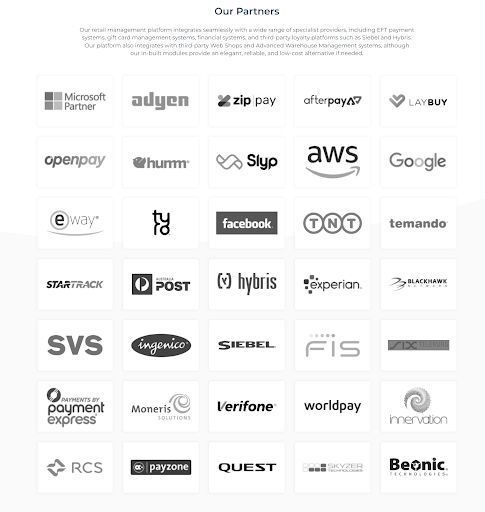

I.T Work
Interview with an I.T Professional
Anthony George’s Work Life
Our IT Professional Chosen was Anthony George, a first year Software Engineer at a company called Retail Directions.
Retail Directions is a company that provides both national and international companies with a software solution that covers all their retail management needs. Their services range from EFT systems to Webshop production and customisation, gift card management systems and much more.
Anthony George works in the E-Commerce department of Retail Directions and he focuses mainly on the webshop programming, and engineering. He works primarily on identifying and fixing bugs within each client’s individual webshop service that may arise from client use or from his team's debugging. However, Anthony's favourite part of his job is developing new features within the webshop, working within a backend environment using PHP. Although, debugging takes up the majority of his time, as ensuring the company’s clientele are of a high esteem and cannot afford to have their services down. He uses coding languages such as c#.net, SQL stored procedures and PHP.
Anthony’s Daily interactions
He works on the E-commerce team, composed of three Software Engineers and a Lead. The lead mainly delegates tasks, supports the team through ensuring they are not overworking themselves and is supportive. Him and his three other Software Engineers do the jobs asked of them, as mentioned, debugging and using a faux environment to play with new web features for the e-commerce sector.
Anthony also mentioned that he does not directly deal with the company’s clients as he just joined the team, with that job being directed to the team’s lead. However he did say that as he advances within his role and works up the ranks of his job he may have the opportunity to get first hand interaction with the company’s large clientele base. Moreover, he is still learning about what his role requires of him on a day to day basis and could not be happier with the job that he has landed as it has allowed him to grow his expansive knowledge of technology having already been an Audio Visual Technician at Siena College in Camberwell as well as creating and hosting websites as a freelancer on the side.
Anthony did however state that he converses constantly with the client care team which he communicates with to air any developer end issues that are out of their teams control. Further, Anthony declared that as the company does not only deal with the e-commerce side of software management it is vital for him to be able to communicate with the different departments within his company. This is due to many issues that need to be dealt with on a day-to-day basis overlapping between departments. This includes the warehouse management department, and the financial systems department to name a few.
Attached below is a website link and an image that displays the partners Retail Directions work with
https://www.retaildirections.com/partners

Where Anthony Spends most of his time
Anthony Georges’ Office is primarily based from home, giving himself a flexible work-life balance that he can adapt in whichever way he likes. However Retail Directions also has an Office based in the CBD of Melbourne that better allows for face to face team work, if need be. He did exclaim that the benefits of being in the office include hasty and seamless communication as his team members and employees from other departments are always at his disposal, especially when he needs to contact them multiple times per day.
This allows Anthony to still work on his freelancing work on the side of his job allowing minimal room for him to tire out or get bored.
The aspect(s) that Anthony finds the most challenging about his job
Anthony is only in his first year at Retail Directions and mentioned that his work has a lot of new information to grasp. Due to issues being relevant to many systems and departments it means he has to understand not only his e-commerce department and how it functions but also all the other systems within the organisation. Thus, taking up a lot of time to become an expert at his job due to its demanding requirements to be able to converse well with other experienced employees as well as other software companies that he works closely with. He explained that he has oftentimes been on calls or meetings with employees from other companies using abbreviations for different systems and hence he struggled to fully understand and converse with them. He has mentioned since that it has gotten easier as time goes on and he better understands his company and his role, and proclaimed that his Lead echoes that, that is completely normal and will get easier as time goes on.
Furthermore, Anthony noted that his company’s database Schema (a database schema is a storage system that allows the backend of an application converses with its counterpart frontend and displays the organisation of data and the relationship between them.) He explained that due to the sheer size of his company and the many applications and platforms they work with, the Schema is overwhelmingly massive and hard to understand for someone who is not used to it.
(we personally found this quite interesting as we are currently learning about Databasing in the Bachelor of IT Course: Practical Database Concepts)
Anthony’s take on how he believes his work captures the essence of the IT industry
The webshop work that Anthony does he believes connects the world together, mentioning that it allows consumerism worldwide, which is something that the IT industry has done for its existence, since its creation the IT industry has been about connecting people with information and services whenever and however they deem necessary. He claimed it connects people to large corporations such as a recent job he completed where he helped create a ‘Payment Gateway’ for an international client (from England) who used Retail Directions (an Australian company) to develop the gateway for them, this included him having to cater to their different needs, for example time zone differences, date formatting, and currency differences.